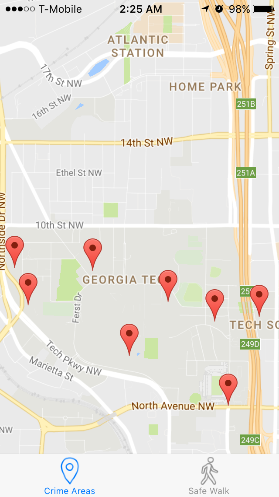

About

I am a rising first year CS undergrad at Georgia Tech, originally from Gurgaon, India. I am a tech geek at heart and I love spending my weekends at either hackathons or Model UN conferences. Currently, I am exploring the many paradigms of Machine Learning through Andrew Ng's MOOC on Coursera, working as a Student Research Assistant at the School of Interactive Computing and developing an iOS application -
SafeWalk.
SafeWalk uses crime logs available on
GTPD's website and the Google Maps API to find the safest way to walk
between any two points on campus. I hope to eventually expand the application
for the entire city of Atlanta. Apart from making walking safer, the app
can be used by foreign tourists to identify areas to avoid and can be
used to make last-mile transit safer.
See GitHub repository.

Bio
| Name |
Prabhav Chawla |
| Education |
Bachelor of Computer Science, Georgia Institute of Technology (Attending) |
| Interests |
Competitive Programming, Model UN |
| Skills |
JavaPythonHTML & CSSJavaScriptMATLAB |
| Clubs |
The Agency - AI club, SGA IT Development Committee |
| Goals |
Master Python by next Spring, Land an internship for Summer 2017 |
Sample Works
Infra-Elephant Project
Created a Java application to emit infra-sonic sound waves which repel elephants near railway tracks, thereby preventing collisions between trains and elephants.
See GitHub repository.
See research paper.
DisMap
DisMap allows users the ability to avoid businesses with recorded incidents of racism, sexism, or otherwise intolerable behavior. It gives public places more transparency to allow users the right to be safe and/or avoid areas of conflict without having to figure it out the hard way.
Learn more about DisMap.
See Github repository.
For more projects,
Resume
Contact